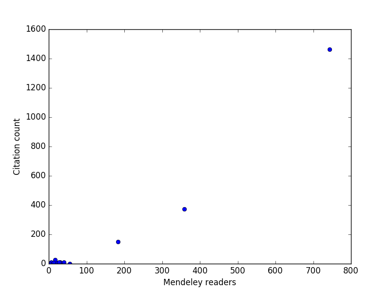

Table of Contents
1 DONE A new take on altmetrics - the Altmetrics API
I previously wrote about altmetrics, and in that post showed how to embed an altmetric badge in html about a paper. Since then, I have learned about the Altmetric API which allows you to gather the altmetric data into tabular form. You will need my scopus Python library, my pycse library, and to follow along with this, and the Python code in Section A new take on altmetrics to do this analysis yourself.
So, here, we get a list of my publications from Scopus (scopusid:7004212771), get the DOI and current citations for each of these that are categorized as "Journal", and then the altmetric data for each of those where there is altmetric data. The altmetric data is returned as json, which we can easily convert to a dictionary for easy analysis.
from scopus.scopus_search import ScopusSearch from scopus.scopus_api import ScopusAbstract from altmetric import altmetric import pycse.orgmode as org s = ScopusSearch(query='au-id(7004212771)', fields='dc:identifier', refresh=True) abstracts = [ScopusAbstract(eid) for eid in s.EIDS if ScopusAbstract(eid).aggregationType == 'Journal'] DOIs = [ab.doi for ab in abstracts] cites = [ab.citedby_count for ab in abstracts] dates = [ab.coverDate for ab in abstracts] data = [altmetric('doi/' + doi) if doi is not None else None for doi in DOIs ] results = sorted([[j.get('title', 'No title').replace('\n', ''), '[[{}][doi]]'.format(j['url']), '[[{}][details]]'.format(j['details_url']), j.get('cited_by_tweeters_count', 0), j.get('cited_by_fbwalls_count', 0), int(j['readers'].get('mendeley', 0)), j.get('cited_by_posts_count', 0), cite, date] for j, cite, date in zip(data, cites, dates) if j], key=lambda x: x[3], reverse=True) results = [['title', 'doi', 'details', 'tweets', 'facebook', 'Mendeley', 'blogs', 'cites', 'date'], ['<50>', '', '', '', '', '', '', ''], None] + results org.table(results, caption='Altmetric data for my publications.', name='alt-met')
| title | doi | details | tweets | Mendeley | blogs | cites | date | |
|---|---|---|---|---|---|---|---|---|
| Examples of Effective Data Sharing in Scientific Publishing | doi | details | 24 | 0 | 36 | 38 | 2 | 2015-06-05 |
| Towards Benchmarking in Catalysis Science:Best Practices, Opportunities, and Challenges | doi | details | 15 | 0 | 56 | 18 | 0 | 2016-04-01 |
| Neural network and ReaxFF comparison for Au properties | doi | details | 9 | 0 | 5 | 12 | 0 | 2016-01-01 |
| Estimating Bulk-Composition-Dependent H2 Adsorption Energies on CuxPd1–x Alloy (111) Surfaces | doi | details | 4 | 1 | 9 | 8 | 5 | 2015-02-06 |
| Relationships between the surface electronic and chemical properties of doped 4d and 5d late transition metal dioxides | doi | details | 2 | 0 | 17 | 2 | 2 | 2015-03-14 |
| The role of vdW interactions in coverage dependent adsorption energies of atomic adsorbates on Pt(111) and Pd(111) | doi | details | 2 | 0 | 4 | 2 | 0 | 2016-08-01 |
| Comparative microfluidic screening of amino acid salt solutions for post-combustion CO2 capture | doi | details | 2 | 0 | 4 | 2 | 0 | 2015-12-01 |
| Alkaline Electrolyte and Fe Impurity Effects on the Performance and Active-phase Structure of NiOOH Thin Films for OER Catalysis Applications | doi | details | 2 | 0 | 17 | 2 | 6 | 2015-05-28 |
| Property Prediction of Crystalline Solids from Composition and Crystal Structure | doi | details | 1 | 0 | 4 | 1 | 0 | 2016-01-01 |
| Property Prediction of Crystalline Solids from Composition and Crystal Structure | doi | details | 1 | 0 | 4 | 1 | 0 | 2016-08-01 |
| High-throughput methods using composition and structure spread libraries | doi | details | 1 | 0 | 0 | 1 | 0 | 2016-01-01 |
| A Linear Response DFT+U Study of Trends in the Oxygen Evolution Activity of Transition Metal Rutile Dioxides | doi | details | 1 | 0 | 30 | 1 | 9 | 2015-01-01 |
| Electrocatalytic Oxygen Evolution with an Immobilized TAML Activator | doi | details | 1 | 0 | 40 | 1 | 10 | 2014-04-16 |
| The outlook for improved carbon capture technology | doi | details | 1 | 0 | 183 | 1 | 150 | 2012-10-01 |
| The redox mediated separation of carbon dioxide from flue gas | doi | details | 1 | 0 | 4 | 1 | 0 | 2015-11-19 |
| Core level shifts in Cu–Pd alloys as a function of bulk composition and structure | doi | details | 1 | 0 | 6 | 1 | 0 | 2015-01-01 |
| Chemical and Molecular Descriptors for the Reactivity of Amines with CO 2 | doi | details | 0 | 0 | 6 | 0 | 11 | 2012-10-24 |
| Simulating Temperature Programmed Desorption of Oxygen on Pt(111) Using DFT Derived Coverage Dependent Desorption Barriers | doi | details | 0 | 0 | 22 | 0 | 6 | 2014-02-01 |
| Comparisons of amine solvents for post-combustion CO2 capture: A multi-objective analysis approach | doi | details | 0 | 0 | 30 | 0 | 10 | 2013-10-01 |
| Correlation of Electronic Structure with Catalytic Activity: H 2 –D 2 Exchange across Cu x Pd 1– x Composition Space | doi | details | 0 | 0 | 3 | 0 | 0 | 2015-05-01 |
| Origin of the Overpotential for Oxygen Reduction at a Fuel-Cell Cathode | doi | details | 0 | 0 | 743 | 1 | 1464 | 2004-11-18 |
| Interactions in 1-ethyl-3-methyl imidazolium tetracyanoborate ion pair: Spectroscopic and density functional study | doi | details | 0 | 0 | 27 | 0 | 11 | 2013-04-24 |
| Separation of CO2 from flue gas using electrochemical cells | doi | details | 0 | 0 | 17 | 1 | 26 | 2010-06-01 |
| Universality in Oxygen Evolution Electrocatalysis on Oxide Surfaces | doi | details | 0 | 0 | 359 | 5 | 373 | 2011-07-11 |
| Probing the effect of electron donation on CO2 absorbing 1,2,3-triazolide ionic liquids | doi | details | 0 | 0 | 13 | 0 | 7 | 2014-03-17 |
Note: For some reason the doi and detail links in the table above seem to get scrambled in the blog post. It doesn't happen in an html export
Obviously not all of my papers (67 now) have altmetric data, and most of the ones that do have very little altmetric data ;(. The Mendeley data is interesting, and this next analysis shows it is reasonably correlated with the number of citations, at least for the few highly cited papers I have. For my typical papers though, it is not clear the correlation is that high.
import matplotlib.pyplot as plt import pycse.orgmode as org mendeley = [x[5] for x in data[2:]] cites = [x[7] for x in data[2:]] plt.plot(mendeley, cites, 'bo') plt.xlabel('Mendeley readers') plt.ylabel('Citation count') org.figure(plt.savefig('images/alt-metrics.png'))

In summary, the Altmetric API gives you access to data, and (in conjunction with Scopus) an ability to systematically compare metrics and altmetrics across any set of documents you can create via queries.
1.1 The altmetric Python code
You may want to look at https://pypi.python.org/pypi/pyaltmetric and https://github.com/ropensci/rAltmetric for more advance Python code to work with the Altmetric API. This one has some features they do not, and was easy to write.
import hashlib import os import json import requests import time def altmetric(query, version='v1', refresh=False, throttle=1): """Return dictionary of altmetric data for query. query is a string like: doi/10.1007/s00799-016-0173-7 Results are cached in ~/.altmetric_data, unless refresh is True. throttle is a delay in seconds to avoid too many requests too fast. see http://api.altmetric.com """ m = hashlib.md5() url = 'http://api.altmetric.com/' + version + '/' + query m.update(url.encode('utf-8')) md5 = m.hexdigest() datafile = os.path.join('/Users/jkitchin/.altmetric_data', md5) if os.path.exists(datafile) and not refresh: with open(datafile) as f: results = json.loads(f.read()) else: req = requests.get(url) if req.status_code != 404: results = req.json() else: results = {} with open(datafile, 'w') as f: f.write(json.dumps(results)) if throttle: time.sleep(throttle) # throttle how many requests we make. return results